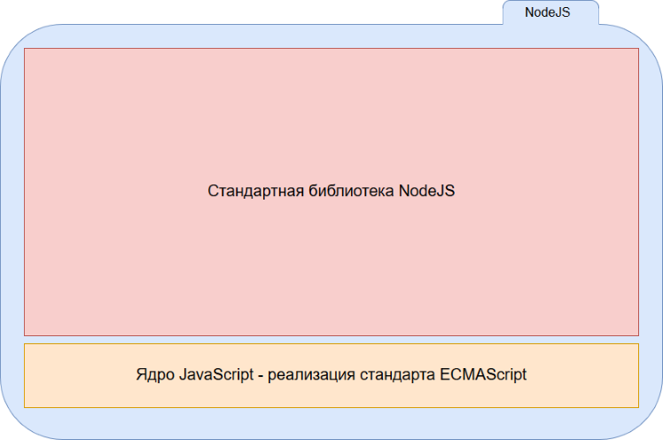
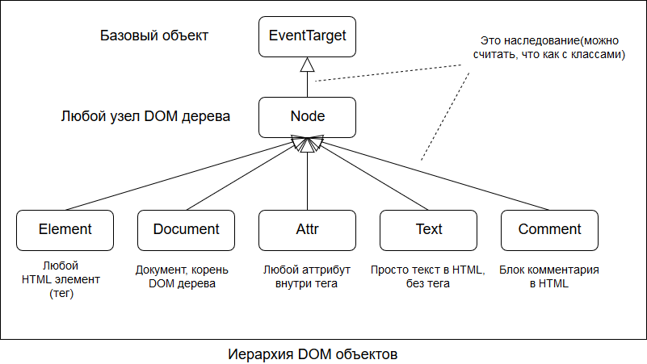
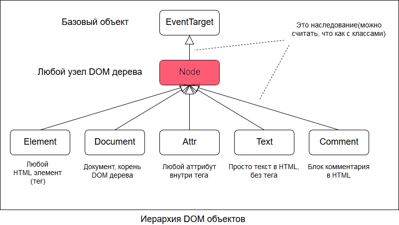
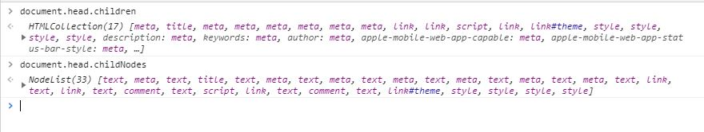
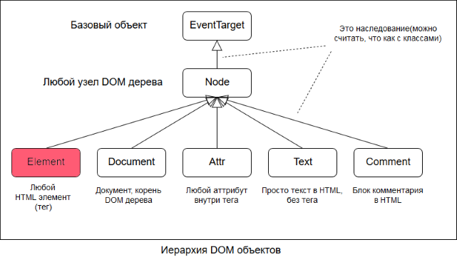
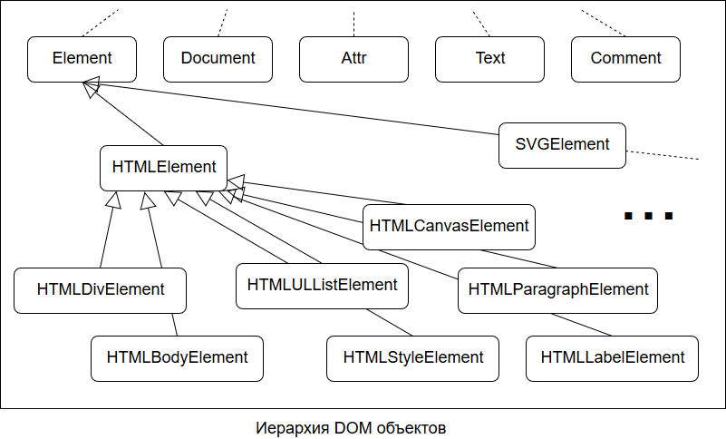
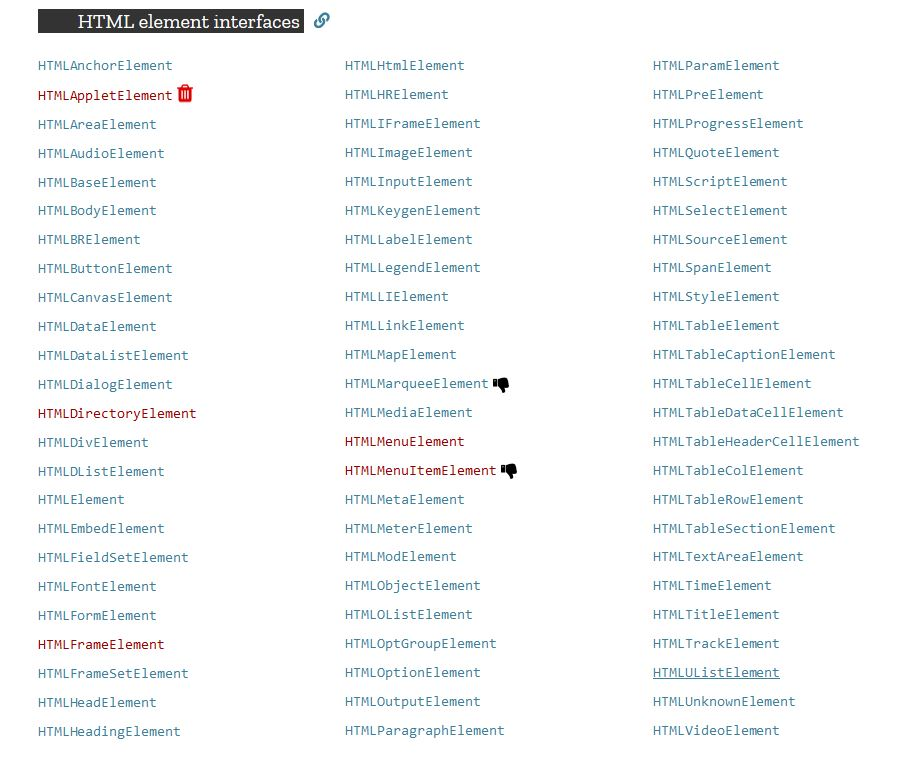
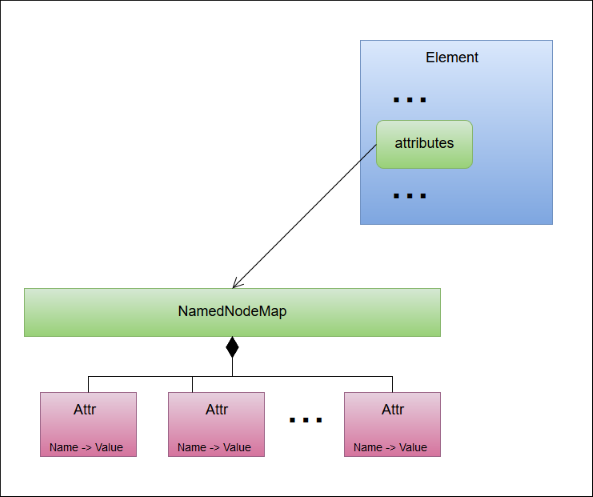
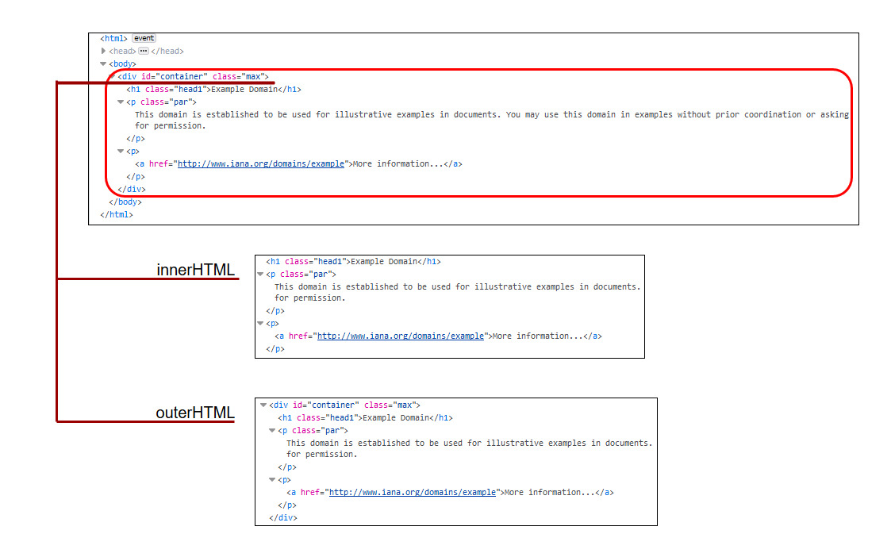
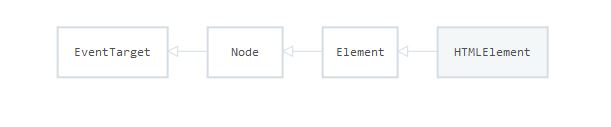

Веб программирование. Фронтенд
Взаимодействие с DOM
Содержание лекции
Миссия Js
Мы много раз говорили, что JS был создан для того, чтобы описывать взаимодействие пользователя с элементами интерфейса, создавать динамику на HTML странице, но пока лишь ходили вокруг да около по базовому синтаксису языка.
Но настало время показать главные возможности JS.
Web API

NodeJs
DOOM
Взаимодействие JS с HTML возможно благодаря DOM.
DOM(Document Object Model, объектная модель документа) - это специальный программный интерфейс (API) для работы с HTML и XML документами.
В общем, это то, что связывает язык программирования (JavaScript) с веб страницей (HTML).
DOM
DOM модель - это отображение HTML документа в программе в виде структуры объектов, так, чтобы с ним можно было работать как с обычными объеками в JS.
DOM содержит набор объектов и функций, которые можно использовать в JS для изменения структуры документа и контента на странице.
С помощью DOM можно добавлять/изменять/создавать любые блоки на HTML странице.
CSSOM
В комплексе с DOM применяется смежный API - CSSOM, который позволяет программно работать со стилями.
CSSOM предоставляет функционал для добавления/редактирования/удаления встроенных стилей элементов страницы и динамического формирования CSS классов.
Окружение JavaScript
В JavaScript всё организовано в виде объектов.
Даже все переменные на самом деле хранятся в виде свойств объекта.
Объекты здесь также используются как пространства имён, чтобы группировать связанные элементы.
Глобальный объект JavaScript
В JS существует понятие глобальный объект - это вершина древовидной структуры объектов, самый верхних объект, внутри которого хранятся все остальные.
В браузерном JavaScript это объект window.
Все другие объекты, существующие в JavaScript, находятся внутри объекта window.
Встроенные объекты
Все объекты, функции и переменные, доступные глобально в JS, на самом деле являются свойствами объекта window.
Например, Array, Math, console - все эти встроенные объекты находятся внутри объекта window.
Вместо Array можно писать window.Array, вместо console window.console - это будет одно и то же.
Глобальные переменные
Более того, даже все переменные и функции, объявленные в глобальном контексте, на самом деле будут храниться в виде свойств глобального объекта window.
Например, простое объявление переменной:
let a = 2;
Эта переменная будет хранится в виде ключа a объекта window, со значением 2:
console.log(window.a); // 2
let string = "blah-blah-blah";
// window.string = "blah-blah-blah"; // Одно и то же
Глобальные функции
С объявлением функций в глобальном контексте та же ситуация: они становятся свойствами (ну или уже методами) глобального объекта window.
function helloUser(name) {
console.log(`Good moorning, ${name}! How do you?`);
}
window.helloUser("Tim");
// То же самое, что и
// window.helloUser = function helloUser(name) {
// console.log(`Good moorning, ${name}! How do you?`);
// }
Объект document
Весь набор объектов и функций, относящийся к взаимодействию с документом, т.е. API DOM и CSSOM, находится во встроенном объекте document (или window.document).
Его можно считать пространством имён, в котором располагаются все DOM функции. Если что-то находится в document - значит это относится к DOM (или CSSOM).
Концепция DOM

DOM дерево
Фундамент DOM-а - DOM дерево, - это древовидная структура, представляющая собой HTML документ.
Каждый элемент HTML документа представляется в виде отдельного JS объекта.
Корневой объект document содержит в себе ссылки на объекты head и body, body содержит ссылки на вложенные в него блоки, например, header, main, aside и footer. Header содержит ссылки на вложенные div-ы, вложенные div-ы содержат ссылки на вложенные в них div-ы, и т.д.
Иерархия объектов DOM
Общее представление
Объект document выполняет сразу 2 функции:
Во-первых, он является контейнером для всех вспомогательных функций по взаимодействию с документом, т.е. пространством имён для всего DOM.
Во-вторых, он представляет собой сам HTML документ в объектной форме, т.е. вершину иерархии DOM дерева.
head и body
Через объект document можно получить доступ к вложенным в него элементам head и body, через соответствующие ключи:
console.log(document.head);
console.log(document.body);
Доступ по имени тега доступен только в document, и только для head и body. Потому что в HTML документе всегда должны быть head и body в количестве 1 штуки.
Дочерние элементы
У всех других объектов, для получения дочерних вложенных элементов необходимо использовать свойство children
Это свойство вернет объект HTMLCollection, который как массив, хранит перечисление вложенных элементов.
Обращаться к ним можно, например, по индексу. Порядок элементов в коллекции соответствует порядку записи этих элементов в HTML документе.
Свойство children
<!DOCTYPE html>
<html lang="en">
<head>
<meta charset="UTF-8">
<title>Document</title>
</head>
<body>
<main>
<div>
<ul>
<li>
<a href=""></a>
</li>
<li>
<a href=""></a>
</li>
<li>
<a href=""></a>
</li>
</ul>
</div>
<section></section>
<footer></footer>
</main>
</body>
</html>
let title = document.head.children[1];
let body = document.body;
let main = body.children[0];
let div = main.children[0];
let aInside3dLi = div.children[0].children[2].children[0];
Получение конкретного элемента в DOM дереве
Добираться до нужного элемента через всё дерево может быть весьма неудобно, поэтому существует множество способов получения требуемого HTML элемента.
Например, получить элемент можно по id. Разумеется, у искомого элемента в HTML должен быть прописан атрибут id.
Выполняется это с помощью метода document.getElementById.
let element = document.getElementById("someId");
Если элемента с указанным id не существует, метод возвращает значение null.
Получение элемента по id
<!DOCTYPE html>
<html lang="en">
<head>
<meta charset="UTF-8">
<title>Document</title>
</head>
<body>
<main>
<div id="socials" >
<ul>
<li>
<a id="tw_link" href=""></a>
</li>
<li>
<a id="fb_link" href=""></a>
</li>
<li>
<a id="in_link" href=""></a>
</li>
</ul>
</div>
<section></section>
<footer id="foot"></footer>
</main>
</body>
</html>
let socialDiv = document.getElementById("socials");
let footer1 = document.getElementById("foot");
let footer2 = document.body.children[0].children[2];
console.log(footer1 === footer2); // true
let fbLink1 = document.getElementById("fb_link");
let fbLink2 = socialDiv.children[0].children[1].children[0];
console.log(fbLink1 === fbLink2);
Node из DOM иерархии
Объект Node
Node - объект, базовый для всех используемых в DOM объектов для представления любой штуки, встречающейся в HTML.
Свойства и методы, находящиеся в этом классе, присущи всем объектам, которые можно встретить в DOM дереве.
Свойства навигации
К основным свойствам объекта Node можно отнести свойства навигации по DOM дереву:

Свойства навигации по узлам
У каждого DOM объекта есть следующие свойства навигации:
- parentNode - родительский узел
- nextSibling - следующий сосед
- previousSibling - предыдущий сосед
- childNodes - дочерние узлы
- firstChild - первый дочерний узел
- lastChild - последний дочерний узел
Все эти свойства предназначены только для чтения, это значит, что с помощью них удалить или заменить элемент нельзя.
Навигация по элементам
На самом деле навигация по узлам редко бывает полезна. А используется навигация только по элементам, с помощью аналогичных методов, но с немного другими названиями:
- parentElement - родительский элемент
- nextElementSibling - следующий соседский элемент
- previousElementSibling - предыдущий соседский элемент
- children - дочерние элементы
- firstElementChild - первый дочерний элемент
- lastElementChild - последний дочерний элемент
Эти свойства есть не у всех узлов, а только у узлов, являющихся HTML элементами.
Узел vs Элемент
В чём отличие Узла от Элемента?
Узел - это более общее понятие, объект, по иерархии наследования располагающийся выше элемента.
Узел - это всё, что можно встретить в HTML документе: теги, простой текст, комментарии.
Элемент - это структурная единица DOM дерева, тег в HTML. Например, div, body, a, p, h3 - Это всё элементы.
И обычно работать приходится именно с элементами. Поэтому не стоит использовать навигационные методы по Node без строгой необходимости.
parentNode / parentElement
Свойство parentElement (и parentNode) содержит ссылку на родительский объект, внутри которого расположен текущий.
Это свойство может быть равно null у корневого объекта document, или же в том случае, если объект не привязан к основному DOM дереву документа.
<!DOCTYPE html>
<html lang="en">
<head>
<meta charset="UTF-8">
<title>Document</title>
</head>
<body>
<main>
<ul>
<li>
<a id="link1" href=""></a>
</li>
<li>
<a href=""></a>
</li>
</ul>
</main>
</body>
</html>
let documentParent = document.parentElement; // null
let main = document.body.children[0];
console.log(main.parentElement); // body
let firstLink = document.getElementById("link1");
console.log(firstLink.parentElement); // li
Пример с parentElement
Вот, например, функция, которая будет выводить всех родителей переданного элемента до самого корня:
function showParents(el) {
if (el instanceof Node === false) {
return;
}
let stack = [];
do {
stack.push(el);
el = el.parentElement;
} while(el.parentElement != null);
let indent = "";
while (stack.length != 0) {
let el = stack.pop();
console.log(indent + el + " - " + el.tagName);
indent += "\t";
}
}
Соседи
Свойства previousElementSibling (previousSibling) и nextElementSibling (nextSibling) позволяют обращаться к соседним элементам, т.е. элементам, расположенным на одном уровне, иначе говоря - имеющих общего родителя.
Свойство previousElementSibling содержит ссылку на соседний элемент, который в HTML располагается выше, чем текущий.
Если текущий элемент первый или единственный, значение этого свойства равно null.
nextElementSibling содержит ссылку на соседний элемент уже с другой стороны, в HTML располагающийся ниже текущего.
Пример с ElementSibling
<!DOCTYPE html>
<html lang="en">
<head>
<meta charset="UTF-8">
<title>Document</title>
</head>
<body>
<main>
<ul>
<li id="item1" >
<a id="link1" href=""></a>
</li>
<li>
<a href=""></a>
</li>
</ul>
</main>
</body>
</html>
let body = document.body;
let prevSibling = body.previousElementSibling; // head
let nextSibling = body.nextElementSibling; // null
let item1 = document.getElementById("item1");
let item2 = item1.nextElementSibling;
function isNodeOnlyChild(el) {
return el.previousElementSibling === el.nextElementSibling;
}
console.log(isNodeOnlyChild(document)); // true
console.log(isNodeOnlyChild(document.head)); // false
console.log(isNodeOnlyChild(document.head.children[0])); // false
console.log(isNodeOnlyChild(document.body.children[0])); // true
Дочерние узлы vs Дочерние элементы
Свойство childNodes хранит объект NodeList - специальный объект, в котором перечислены все дочерние узлы.
В чём его отличие от свойства children?
children выдаёт список дочерних элементов (т.е. только объекты Element), а childNodes - список всех дочерних узлов (все производные объекты от Node).
То есть, children - это список элементов, представляющих валидные HTML теги.
А childNodes - список из всего, что есть внутри текущего элемента, включая комментарии, обычный текст и т.д.
Демонстрация разницы 1
Посмотрим разницу между Узлами и Элементами на следующем примере:
<!DOCTYPE html>
<html lang="en">
<head>
<meta charset="UTF-8">
<title>Document</title>
</head>
<body>
<!-- Комментарий -->
<div></div>
</body>
</html>
let body = document.body;
console.log(body.children); // 1 штука: [ div ]
console.log(body.childNodes); // 5 штук: [ text, comment, text, div, text]
// Как так?
Демонстрация разницы 2
А теперь:
<!DOCTYPE html>
<html lang="en">
<head>
<meta charset="UTF-8">
<title>Document</title>
</head><body><!-- Комментарий --><div></div></body></html>
let body = document.body;
console.log(body.children); // 1 штука: [ div ]
console.log(body.childNodes); // 2 штуки: [ comment, div ]
// О как
Вот поэтому навигацию по Node лучше не использовать!
Демонстрация разницы 3
Можно открыть любой сайт и посмотреть, например, в document.head или document.body, на их дочерние узлы и дочерние элементы.
Пример childNodes
Вот функция, которая показывает сколько есть и каких узлов, не являющихся элементами, в переданном узле.
function showNonElements(el) {
if (el instanceof Node === false) {
return;
}
let arr = [];
let elements = el.children;
let nodes = el.childNodes;
for (let i = 0; i < nodes.length; ++i) {
let found = false;
for (let j = 0; j < elements.length; ++j) {
if (nodes[i] === elements[j]) {
found = true;
break;
}
}
if (!found) {
arr.push(nodes[i]);
}
}
console.log(`${arr.length} non-elements was founded:`);
for (let el of arr) {
console.log(el);
}
}
Крайние потомки
Свойства firstElementChild (firstChild) и nextElementChild (nextChild) указывают на, соответственно, первый дочерний элемент и последний дочерний элемент.
Если дочерний элементы лишь один, то оба свойста будут указывать на один и тот же объект.
Если потомков нет - будет значение null;
Почти финальный пример навигации
Осторожно: рекурсия!
Следующий алгоритм ищет и выводит самую длинную ветку DOM дерева:
function showParents(el) {
if (el instanceof Node === false) {
return;
}
let stack = [];
do {
stack.push(el);
el = el.parentElement;
} while(el.parentElement != null);
let indent = "";
while (stack.length != 0) {
let el = stack.pop();
console.log(indent + el + " - " + el.tagName);
indent += "\t";
}
}
function showLongestBranch() {
let dpNode = null;
let deepestLevel = 0;
(function find(currentNode, currentLevel) {
if (currentNode.children && currentNode.children.length != 0) {
for (let i = 0; i < currentNode.children.length; ++i) {
find(currentNode.children[i], currentLevel + 1);
}
} else if (currentLevel > deepestLevel) {
dpNode = currentNode;
deepestLevel = currentLevel;
}
})(document, 0);
console.log(`Longest branch in ${deepestLevel} nodes in depth!`);
showParents(dpNode);
}
showLongestBranch();
Обход всего DOM дерева
Осторожно: высокая концентрация рекурсии! Опасно для жизни!
Следующая функция перебирает все элементы DOM дерева и выполняет для кажого элемента переданную callback-функцию:
function eachNode(rootNode, callback) {
if (!callback) {
let nodes = [];
eachNode(rootNode, function (node) {
nodes.push(node);
});
return nodes;
}
if (callback(rootNode) === false) {
return false;
}
if(rootNode.hasChildNodes()) {
let nodes = rootNode.childNodes;
for (let i = 0, l = nodes.length; i < l; ++i) {
if (eachNode(nodes[i], callback) === false) {
return;
}
}
}
}
// Пригодится в будущем
Другие свойства Node
Помимо свойств навигации, любой объект Node содержит следующие полезные свойства:
Свойства только для чтения:
- isConnected - проверка, присоединён ли узел к основному DOM дереву
- nodeName - имя узла (например, название тега для узлов-элементов)
- nodeType - тип узла (элемент, комментарий, текст)
Другие свойства Node
Следующие 2 свойства являются редактируемыми, т.е. в них можно также и записывать данные, изменяя тем самым содержимое документа.
- nodeValue
- textContent
Свойство nodeValue используется для узлов-комментариев и текстовых узлов, чтобы хранить их значение. Т.е. с помощью него можно получить и задать значение для простого текста без тегов и комментариев в HTML. Для других типов узлов его значение равно null и ни на что не влияет.
Свойство textContent хранит своё текстовое содержимое и текстовое содержимое всех своих потомков. Менять с помощью него текс можно только когда он записан непосредственно в текущем элементе.
Создание узлов
С помощью методов объекта document можно создавать любые виды узлов:
- document.createElement
- document.createComment
- document.createTextNode
- document.createAttribure
Создание HTML элементов
Конечно, основной метод здесь createElement - для создания HTML элементов, или же тегов.
Метод имеет один обязательный параметр - название тега создаваемого элемента.
let newElement = document.createElement("tag-name");
Метод создаёт пустой и чистый элемент, не присоединённый к DOM дереву. Т.е. все свойства указывающие на родителей, детей или соседей у него будут равны null.
Соединять его с основным DOM деревом нужно вручную (т.е. с помощью других функций).
Пример создания элементов
let newParagraph = document.createElement("p");
let newDiv = document.createElement("div");
let newUl = document.createElement("ul");
let newVideo = document.createElement("video");
console.log(
newParagraph.parentElement === newDiv.parentElement ===
newUl.parentElement === newVideo.parentElement === null
);
console.log(
newParagraph.children.length === newDiv.children.length ===
newUl.children.length === newVideo.children.length === 0
);
let newParagraph = document.createElement("p");
let newDiv = document.createElement("div");
let newUl = document.createElement("ul");
let newVideo = document.createElement("video");
console.log(
newParagraph.parentElement === newDiv.parentElement ===
newUl.parentElement === newVideo.parentElement === null
);
console.log(
newParagraph.children.length === newDiv.children.length ===
newUl.children.length === newVideo.children.length === 0
);
Методы объекта Node
А теперь посмотрим, какие методы есть у любого объекта Node:
- appendChild - добавляет дочерний узел
- insertBefore - добавляет дочерний узел перед указанным дочерним узлом
- cloneNode - создаёт копию узла
- removeChild - удаляет дочерний узел
- replaceChild - заменяет дочерний узел другим
- contains - проверка, содержится ли переданный узел в текущем
С полным перечнем свойств и методов Node можно ознакомиться на MDN.
Добаление элементов
Один из самых важных методов!
С помощью метода appendChild можно присоединить один узел к другому.
Метод принимает один обязательный параметр - узел, который будет добавлен в конец списка дочерних элементов текущего узла.
element.appendChild(aChild);
Элемент, передаваемый в качестве параметра, присоединяется к элементу, для которого этот метод вызывается.
При добавлении элемента к родителю, все навигационные свойства автоматически обновляют свои значения.
Пример добавления элемента
let div = document.createElement("div");
console.log(div.children); // HTMLCollection []
let header = document.createElement("h2");
console.log(header.parentNode); // null
div.appendChild(header);
console.log(div.children); // HTMLCollection [ h2 ]
console.log(header.parentNode); // div
console.log(div.firstChild); // div
let paragraph = document.createElement("p");
div.appendChild(paragraph);
console.log(div.children); // HTMLCollection [ h2, p ]
console.log(paragraph.parentNode); // div
console.log(header.nextSibling); // p
console.log(paragraph.previousSibling); // h2
appendChild в действии
Пример функции, которая добавляет новый элемент li в список:
<!DOCTYPE html>
<html lang="en">
<head>
<meta charset="UTF-8">
<title>Document</title>
</head>
<body>
<main>
<ul id="list">
</ul>
</main>
</body>
</html>
function addListItemWithText(text) {
let list = document.getElementById("list");
if (list) {
let newItem = document.createElement("li");
newItem.textContent = text;
list.appendChild(newItem);
}
}
addListItemWithText("Пункт 1");
addListItemWithText("Пункт 2");
addListItemWithText("Пункт 3");
Динамическое построение HTML документа
See the Pen BbXRWx by Pavel (@ParadoxMaster) on CodePen.
Добавление методом insertBefore
Метод insertBefore используется для того, чтобы добавить дочерний элемент перед другим указанным дочерним элементом.
Метод принимает 2 обязательных параметра: 1 - добавляемый элемент, 2 - присутствующий элемент, перед которым нужно вставить первый.
let insertedNode = parentNode.insertBefore(newNode, referenceNode);
- parentNode - элемент, в который будет добавлен новый
- newNode и insertedNode - добавляемый/добавленный элемент
- referenceNode - элемент, который уже находится в parentNode, перед которым будет вставлен newNode
Пример insertBefore
Вот методы insertBefore есть, а метода insertAfter - нет. Несправедливость!
Давайте сами напишем метод insertAfter, используя метод insertBefore:
function insertAfter(parentNode, newNode, referenceNode) {
if (referenceNode != null) {
parentNode.insertBefore(newNode, referenceNode.NextSibling);
} else {
parentNode.appendChild(newNode);
}
}
Добавление существующего элемента
Интересный момент, при добавлении элемента, который уже присутствует где-то в DOM дереве, он будет удалён из своей старой позиции и перемещён в новую.
Т.е. один элемент не может находиться сразу в 2 местах на странице.
See the Pen qveReQ by Pavel (@ParadoxMaster) on CodePen.
Клонирование
А что делать, если всё-таки нужно добавить элемент, идентичный уже существующему? Тогда поможет метод cloneNode.
Метод cloneNode создаёт полную глубокую копию узла. Глубокую - означает, что вместе с самим элементом копируются и все вложенные в него дочерние элементы.
Таким образом, можно быстро создавать копии целых ветвей в DOM дереве.
let deepCopy = node.cloneNode(true);
Хотя это поведение можно отключить, передав в параметрах значение false. Тогда будет создана только копия конкретного элемента, без дочерних элементов.
Пример cloneNode
В этом примере создаются 2 копии карточки, одна с помощью глубокого копирования, другая с помощью мелкого копирования:
See the Pen Figure - Caption | Flexbox by Pavel (@ParadoxMaster) on CodePen.
Подводные камни клонирования
Создавать копии узлов нужно внимательно, потому что некоторые вещи копировать не следует, например, id. При копировании объектов будут скопированы все их атрибуты, в том числе и уникальный id.
В таким случаях id скопированного узла следует дополнительно изменять.
Также могут встречаться и другие проблемы при копировании элементов с привязанными обработчиками событий, или копировании canvas.
Удаление дочерних элементов
Метод removeChild используется для удаления элемента из родительского узла, или же отсоединения дочернего узла от родителя.
Метод принимает 1 обязательный параметр - элемент, который необходимо удалить из списка вложенных элементов.
let oldChild = node.removeChild(child);
Элемент child отсоединяется от элемента node.
Пример удаления
<!DOCTYPE html>
<html lang="en">
<head>
<meta charset="UTF-8">
<title>Document</title>
</head>
<body>
<main>
<ul id="list">
<li>
<a href="">Первая ссылка</a>
</li>
<li>
<a href="">Вторая ссылка</a>
</li>
<li>
<a href="">Третья ссылка</a>
</li>
<li>
<a href="">Четвёртая ссылка</a>
</li>
</ul>
</main>
</body>
</html>
let list = document.getElementById("list");
for (let i = 0; i < list.children.length; ++i) {
let listItem = list.children[i];
let linkInsideItem = listItem.firstElementChild;
listItem.removeChild(linkInsideItem);
}
Пример удаления
Следующая функция будет очищать (удалять всех детей) указанный элемент:
function removeAllChildren(element) {
while(element.firstChild) {
element.removeChild(element.firstChild);
}
}
removeAllChildren(document.body);
Замена элемента
Метод replaceChild выполняет замену одного элемента на другой элемент.
let replacedNode = parentNode.replaceChild(newChild, oldChild);
- parentNode - элемент, чьих детей подменяем
- newChild - новый элемент, который встанет на место oldChild
- oldChild и replacedNode - элемент, который будет заменён
Замена = удаление + добавление
Пример replaceChild
Квадрат-пожиратель:
See the Pen ZPgaGW by Pavel (@ParadoxMaster) on CodePen.
Желтые против Синих
See the Pen OqKOze by Pavel (@ParadoxMaster) on CodePen.
Метод contains
С помощью метода contains можно проверить, содержится ли указанный элемент у другом элементе, вне зависимости от глубины вложенности.
node.contains(otherNode)
Метод возвращает true, если элемент otherNode является самим элементом node, его дочерним элементом, или дочерним его дочерних элментов и т.д.
Пример contains
Простой метод для проверки, присоединён ли элемент к основному DOM дереву:
function isInPage(node) {
return document.body.contains(node);
}
isInPage(document.head); // false
isInPage(document.body.lastElementChild); // true
Объект Element
Это был только объект Node.
Теперь мы рассмотрим следующий в иерархии объект - Element, основной объект, используемый при работе с DOM.
Наследники Element
И это ещё не конец, у Element-а целая куча наследников
Гораздо больше...
Основной функционал
Но все последующие объекты уже не добавляют почти никакого дополнительного функционала, только всякие нестандартные элементы, типа canvas.
Основные функции и свойства сосредоточены в объектах Node, который мы рассмотрели, и Element, который мы разберём сейчас.
*Ещё некоторые дополнительные функции и свойства, такие как рассмотренные нами навигационные свойства для элементов, находятся в отдельных объектах, не входящим в основную иерархию, - так называемых, миксинах (mixin).Element и атрибуты
Объект Element добавляет целый ряд свойств и методов для работы с атрибутами.
Свойство
- attributes - список всех атрибутов
И методы:
- getAttribute() - получение значения конкретного атрибута
- getAttributeNames() - выдаёт массив атрибутов
- hasAttribute() - проверка наличия атрибута
- hasAttributes() - проверка наличия атрибутов в принципе
- removeAttribute() - удаление атрибута
- setAttribute() - установка значения атрибута
- toggleAttribute() - переключение булевого атрибута
Свойство attributes
attributes - универсальное свойство для работы с атрибутами. С помощью него можно получить доступ ко всем атрибутам элемента, добавлять новые атрибуты, изменять или удалять существующие.
Свойство attributes содержит специальный объект NamedNodeMap, который является чем-то вроде перечисления из пар ключ-значение.
Объект NamedNodeMap
Объект NamedNodeMap хранит в себе перечисление из объектов Attr (это которые наряду c Element наследуются от Node).
Элементы этого перечисления можно перебирать по индексам, либо же обращаться к атрибутам по их именам.
Объект Attr
При работе с атрибутами через свойство attributes нужно быть очень внимательным, т.к. легко забыть, что атрибуты хранятся не в виде простых строковых значений, а виде объектов Attr.
Следующая запись на первый взгляд может показаться нормальной, но это неправильная запись:
node.attributes.id = "uniqueId"; // неправильно
node.attributes.name = "objName"; // неправильно
node.attributes.href = "http://localhost:5500/index.html"; // неправильно
Изменение значения атрибута через объект Attr
В объекте Attr значение аттрибута хранится в свойстве value. И если нужно изменять его, то нужно это делать именно через это свойство.
node.attributes.id.value = "uniqueId"; // Ок
node.attributes.name.value = "objName"; // Ок
node.attributes.href.value = "http://localhost:5500/index.html"; // Ок
Имя атрибута можно получить через свойство name:
console.log(node.attributes.role.name); // "id"
console.log(node.attributes.type.name); // "type"
console.log(node.attributes.tabindex.name); // "tabindex"
Схема объектов атрибутов
Доступ к атрибутам через attributes
В этом примере показан доступ к атрибутам по индексам:
<!DOCTYPE html>
<html lang="en">
<head>
<meta charset="UTF-8">
<title>Document</title>
</head>
<body class="body-container">
<main class="container">
<ul id="list" class="blue-list">
<li>
<a id="link_1" name="clecture" href="https://learn.paradox.red/clecture">Первая ссылка</a>
</li>
<li>
<a id="link_2" href="https://learn.paradox.red/sharp">Вторая ссылка</a>
</li>
<li>
<a id="link_3" href="https://learn.paradox.red/js">Третья ссылка</a>
</li>
<li>
<a id="link_4" href="https://learn.paradox.red/testing">Четвёртая ссылка</a>
</li>
</ul>
</main>
</body>
</html>
function showAttr(el) {
if (el.attributes.length === 0) {
console.log("No attributes to show");
return;
}
for (let i = 0; i < el.attributes.length; ++i) {
console.log(el.attributes[i].name.padEnd(5) + " --> " + el.attributes[i].value);
}
}
let link1 = document.getElementById("link_1");
showAttr(link1);
Доступ к атрибутам по ключу
А здесь осуществляется получение атрибутов по ключу, а также изменение их значений:
<!DOCTYPE html>
<html lang="en">
<head>
<meta charset="UTF-8">
<title>Document</title>
</head>
<body class="body-container">
<main class="container">
<ul id="list" class="blue-list">
<li>
<a id="link_1" name="clecture" href="https://learn.paradox.red/clecture">Первая ссылка</a>
</li>
<li>
<a id="link_2" name="sharp" href="https://learn.paradox.red/sharp">Вторая ссылка</a>
</li>
<li>
<a id="link_3" name="js" href="https://learn.paradox.red/js">Третья ссылка</a>
</li>
<li>
<a id="link_4" name="testing" href="https://learn.paradox.red/testing">Четвёртая ссылка</a>
</li>
</ul>
</main>
</body>
</html>
let list = document.getElementById("list");
let item = list.firstElementChild;
do {
let linkAttrs = item.children[0].attributes;
linkAttrs.href.value = "http://example.com/";
console.log(`${linkAttrs.name.value} now leads to ${linkAttrs.href.value}`);
item = item.nextElementSibling;
} while (item != null);
Методы объекта NamedNodeMap
- getNamedItem() - аналог получения атрибута по ключу
- item() - аналог получения атрибута по индексу
- removeNamedItem() - удаление атрибута
- setNamedItem() - добавление Attr объекта атрибута
Первые 2 метода - это то же самое, что получение атрибута по ключу/значению, только через методы.
Метод setNamedItem слишком сложный для добавления атрибута, есть пути гораздо проще. Этот метод принимает параметр - объект типа Attr, который предварительно нужно создать с помощью document.createAttribute.
Удаление атрибута через attributes
Единственный метод, которым здесь можно пользоваться, это removeNamedItem.
Он удаляет у элемента атрибут, по переданному названию.
let deletedAttr = node.attributes.removeNamedItem("name-of-attribute");
Но и для удаления есть варианты попроще.
Методы Element для атибутов
Напомним, что у объекта Element, помимо свойства attributes, хоть всё можно сделать и через него, для удобства существует набор методов для выполнения различных операций над атрибутами:
- getAttributeNames() - выдаёт массив атрибутов
- getAttribute() - получение значения конкретного атрибута
- hasAttribute() - проверка наличия атрибута
- hasAttributes() - проверка наличия атрибутов в принципе
- removeAttribute() - удаление атрибута
- setAttribute() - установка значения атрибута
- toggleAttribute() - переключение булевого атрибута
Эти методы прячут внутри всё сложное устройство attributes с их объектами Attr, и выдают только сами ключи и значения.
Получение имён и значений атрибутов
С помощью метода getAttributeNames можно получить массив из названий атрибутов у текущего элемента.
let attrArray = element.getAttributeNames();
let attrs = link1.getAttributeNames(); // [ "id", "name", "href" ]
А метод getAttribute позволяет по извествному названию атрибута получить его значение.
let attrValue = element.getAttribute("attrName");
let linkAddress = link1.getAttribute("href"); // "http://example.com"
Проверка наличия атрибутов
Чтобы проверить, если ли у элемента вообще хоть один атрибут, или нет ни одного, можно с помощью метода hasAttributes.
Этот метод не принимает параметров и возвращает false, если у элемента нет ни одного атрибута.
Проверить, есть ли у текущего элемента какой-либо конкретный атрибут, можно с помощью метода hasAttribute.
В качестве параметра этот метод принимает строку - имя атрибута, и возвращает true, если такой атрибут присутствует у этого элемента.
Пример работы с атрибутами
Воспользуемся нашей старой рекурсивной функцией для обхода всего дерева, для того чтобы найти все элементы с атрибутами href:
// Обход DOM дерева
function eachElement(rootElement, callback) {
if (!callback) {
let elements = [];
eachElement(rootElement, function (element) {
elements.push(element);
});
return elements;
}
if (callback(rootElement) === false) {
return false;
}
if(rootElement.children.length != 0) {
let elements = rootElement.children;
for (let i = 0, l = elements.length; i < l; ++i) {
if (eachElement(elements[i], callback) === false) {
return;
}
}
}
}
// Основная функция
let count = 0;
eachElement(document, function(el) {
if (el.hasAttributes && el.hasAttributes() && el.hasAttribute("href")) {
console.log(el.getAttribute("href"));
++count;
}
});
console.log(`A total of ${count} elements were found with href!`);
Удаление и добавление атрибутов
Удалить атрибут помогает метод removeAttribute, принимающий в качества аргумента название удаляемого атрибута.
element.removeAttribute("attribute-name");
Добавить новый атрибут или новое значение можно с помощью метода setAttribute. Этот метод принимает 2 параметра: название атрибута и новое значение.
element.setAttribute("attribute-name", "attributeValue");
Пример с удалением/добавление атрибутов
Например, следующая функция, снова используя ту функцию для обхода DOM дерева, позволяет удалить любой атрибут со всей страницы.
Например, можно деактивировать все ссылки, удалив атрибут href, или "очистить" страницу, удалив все атрибуты с css классами.
// Обход DOM дерева
function eachElement(rootElement, callback) {
if (!callback) {
let elements = [];
eachElement(rootElement, function (element) {
elements.push(element);
});
return elements;
}
if (callback(rootElement) === false) {
return false;
}
if(rootElement.children.length != 0) {
let elements = rootElement.children;
for (let i = 0, l = elements.length; i < l; ++i) {
if (eachElement(elements[i], callback) === false) {
return;
}
}
}
}
// Функция удаления указанного атрибута со всех элементов страницы
function cleanAttribute(attr) {
eachElement(document, function (el) {
if (el.hasAttribute && el.hasAttribute(attr)) {
el.removeAttribute(attr);
}
});
}
cleanAttribute("href");
cleanAttribute("src");
cleanAttribute("srcset");
// А вот код, который будет добавлять всплывающую подсказку для всех изображений img на странице:
eachElement(document, function (el) {
if (el.hasAttribute && el.tagName.toLowerCase() == "img") {
el.setAttribute("title", "Это всплывающая подсказка. Которой здесь быть не должно, хакеры!");
}
});
Работа с булевыми атрибутами
Метод toggleAttribute переключает значение булевого атрибута. Т.е. если этот атрибут есть, убирает его, если же атрибута нет - то добавляет.
В аргументах ему передаётся имя атрибута:
let isActive = element.toggleAttribute("attribute-name");
Дополнительно вторым параметром можно передавать булевое значение, жестко задающее поведение: true, если нужно активировать атрибут, false - если нужно убрать его.
Это получается то же самое, что setAttribute, только лишь для булевых атрибутов.
// Force activating
element.toggleAttribute("attribute-name", true);
// Force deactivating
element.toggleAttribute("attribute-name", false);
Пример с toggleAttribute
Здесь каждые 10 секунд переключаются булевые атрибуты readonly для textarea и contenteditable для div-а, что переключает их между редактируемым и статическим состоянием.
See the Pen NJQEzP by Pavel (@ParadoxMaster) on CodePen.
Атрибут id
Для доступа к атрибуту id элемента на самом деле вообще не нужно пользоваться никакими методами, или обращаться к attributes.
Для удобства, атрибут id в Element вынесен в отдельное свойство.
С помощью него можно и читать, и изменять id:
let id = element.id;
element.id = "newUniqueId";
let superBlock = document.getElementById("su_block");
console.log(superBlock.id); // "su_block"
superBlock.id = "id_123";
console.log(superBlock.id); // "id_123"
let byOldId = document.getElementById("su_block"); // null
let byNewId = document.getElementById("id_123"); // div
Пример c id
В этом примере происходит копирование элемента с id. Соответственно, у каждой копии нужно менять id на новый.
See the Pen aMeMmW by Pavel (@ParadoxMaster) on CodePen.
Забегая вперёд...
Чтобы можно было показывать более интересные примеры, давайте мельком разберём один из главных способов взаимодействия пользователя с документом:
Клик мышкой
Событие click
Всё взаимодействие пользователя со страницей строится на событиях. И самым главным событием является событие click, которое происходит при одиночном нажатии левой кнопкой мыши.
Это событие есть у любого элемента (Element) и документа Document.
Т.е. на любой элемент HTML страницы можно назначит какую-нибудь логику, которая будет выполняться при нажатии мышью на этот элемент. Будь то блок div, элемент списка li, простой параграф p, весь документ - что угодно может обрабатывать событие click.
Обработчик события
Обработчик события - функция, которая будет выполняться в ответ на это событие. Для функции в роли обработчика нет никаких ограничений, любая функция может быть обработчиком события.
Обработчик события назначается элементу через функцию addEventListener.
element.addEventListener("click", Function);
- element - элемент DOM, для которого будет обрабатываться событие
- 1 параметр, "click" - название события
- 2 параметр, Function - функция-обработчик события
Классический пример
See the Pen Simple click by Pavel (@ParadoxMaster) on CodePen.
Клик по всему
Следующая функция, используя старую добрую функцию eachElement для обхода всех элементов DOM дерева, добавляет каждому элементу обработчик, который выводит информацию об этом элементе.
// Обход DOM дерева
function eachElement(rootElement, callback) {
if (!callback) {
let elements = [];
eachElement(rootElement, function (element) {
elements.push(element);
});
return elements;
}
if (callback(rootElement) === false) {
return false;
}
if(rootElement.children.length != 0) {
let elements = rootElement.children;
for (let i = 0, l = elements.length; i < l; ++i) {
if (eachElement(elements[i], callback) === false) {
return;
}
}
}
}
// Основная функция
eachElement(document, function (el) {
el.addEventListener("click", function(e) {
console.log(`<${el.nodeName} class="${el.className}">`);
e.stopPropagation();
});
});
Пример click с appendChild
See the Pen Click event example by Pavel (@ParadoxMaster) on CodePen.
Улучшенный пример с removeChild
See the Pen Extended click example by Pavel (@ParadoxMaster) on CodePen.
CSS классы
CSS классы присоединяются к элементам страницы через те же атрибуты. И в объекте Element есть очень удобный способ с ними работать.
К атрибуту class можно получить доступ и с помощью предыдущих, рассмотренных ранее методик, но значительно удобнее с ними работать через специальные свойства.
Вообще, связанный с CSS классами в объекте Element 2:
- className
- classList
Свойство className
Свойство className предоставляет быстрый доступ к атрибуту class, так же как и рассмотренный только что id. С помощью него можно просматривать и задавать значение атрибута.
let div = document.getElementById("main_cont"); // <div class="container yello_sp1 thr2">
console.log(div.className); // "container yello_sp1 thr2"
div.className = "container thr1";
console.log(div); // <div class="container thr1">
Однако не очень удобно работать с этим атрибутом, как со строкой. С одним элементом может быть сразу связано несколько CSS классов, и пытаться извлечь только нужный класс из строки совершенно неудобно.
Поэтому это свойство редко бывает полезно, в особенности из-за наличия следующего свойства.
classList
Свойство classList одно из самых важных и полезный свойств в DOM.
Оно позволяет удобно манипулировать классами у выбранного элемента, добавлять, удалять, проверять на наличие конкретных классов.
Вообще, это свойсто содержит в себе специальный объект DOMTokenList - что-то вроде массива/перечисления CSS классов выбранного элемента.
Методы объекта DOMTokenList
Объект DOMTokenList хранит назначенные элементу CSS классы в виде массива строк и содержит следующие методы:
- add() - добавление CSS класса
- remove() - удаление CSS класса
- item() - получение класса по индексу
- contains() - проверка наличия указанного класса
- toggle() - переключение класса (вкл/выкл)
- replace() - замена одного класса на другой
Количество стилей у элемента можно узнать через обычное свойство length.
Добавление и удаление классов
Методом add можно добавить к элементу один класс, или сразу несколько.
Методом remove, по аналогии, можно удалить класс(ы) у элемента.
element.classList.add("class-name");
element.classList.add("class1", "class2", "class3");
element.classList.remove("class-name");
element.classList.remove("class1", "class2", "class3");
Если попытаться добавить уже существующий класс, или удалить класс, которого у элемента нет - ничего не произойдёт.
Пример добавления класса
See the Pen mgdEWx by Pavel (@ParadoxMaster) on CodePen.
Перебор...
See the Pen Css class add & remove by Pavel (@ParadoxMaster) on CodePen.
Проверка наличия конкретного класса
С помощью метода contains() можно проверить, есть ли в данный момент указанный класс у заданного элемента.
element.classList.contains("class-name");
if (element.classList.contains("class1")) {
console.log("Элемент содержит класс class1");
} else {
console.log("У элемента нет класса class1");
}
Крестики-нолики
See the Pen Tic-tac-toe by Pavel (@ParadoxMaster) on CodePen.
Переключение состояния класса
С помощью метода toggle() можно переключать состояние указанного класса.
Если у элемента есть такой класс, он будет удалён. Если такого класса нет - он будет добавлен. Это как переключение булевого флага: true/false - включен/выключен.
Этот метод бывает полезен когда у нас в стилях есть строго 2 состояния, в тех ситуациях, когда нужно включать-выключать что-то, например, через чекбоксы.
element.classList.toggle("class-name");
element.classList.toggle("class-example"); // Класс class-example добавлен
element.classList.toggle("class-example"); // Класс class-example убран
element.classList.toggle("class-example"); // Класс class-example добавлен
element.classList.toggle("class-example"); // Класс class-example убран
Пример с переключением класса
В этом примере toggle() используется для переключения тёмной темы (включена/выключена).
See the Pen Toggle class state by Pavel (@ParadoxMaster) on CodePen.
Замена класса
Метод replace() позволяет заменить один класс другим.
element.classList.replace("oldClass", "newClass");
У элемента по ссылке element класс oldClass заменяется на класс newClass.
Причём, если первым параметром передать класс, которого у элемента нет, новый класс не добавится.
Чтобы замена прошла успешно, нужно чтобы обязательно было что заменять.
Пример с replace
See the Pen Various themes by Pavel (@ParadoxMaster) on CodePen.
Работа с HTML разметкой
В объекте Element есть ещё 2 довольно полезных свойства:
- innerHTML
- outerHTML
Эти свойства позволяют работать напрямую с текстовой HTML разметкой элементов. Они хранят строки, содержащие в себе внутренний HTML код элемента. И значение в этих свойствах можно не только, читать но и записывать.
Т.е. с помощью этих свойств можно добавлять элементы в DOM дерево прямо в виде текста, как он записывается в самом HTML, вместо использования методов document-а и Element-а.
Свойство innerHTML
В свойстве innerHTML у элемента хранится вся HTML разметка, находящаяся внутри этого элемента. Т.е. разметка всех потомков, потомков его потомков, и т.д. Всё, что находится ниже по DOM дереву.
<!DOCTYPE html>
<html lang="en">
<head>
<meta charset="UTF-8">
<title>Document</title>
</head>
<body class="body-container">
<header>
<div id="nav" class="nav_box">
<ul class="navigation">
<li>Пункт меню 1</li>
<li>Пункт меню 2</li>
<li>Пункт меню 3</li>
<li>Пункт меню 4</li>
</ul>
</div>
</header>
<main class="container">
<div>
<ul id="list" class="blue-list">
<li>
<a id="link_1" name="clecture" href="https://learn.paradox.red/clecture">Первая ссылка</a>
</li>
<li>
<a id="link_2" name="sharp" href="https://learn.paradox.red/sharp">Вторая ссылка</a>
</li>
<li>
<a id="link_3" name="sharp" href="https://learn.paradox.red/js">Третья ссылка</a>
</li>
<li>
<a id="link_4" name="sharp" href="https://learn.paradox.red/testing">Четвёртая ссылка</a>
</li>
</ul>
</div>
<div id="quot" class="info">
<span>Какой-то текст</span>
<span>2 раза</span>
</div>
</main>
</body>
</html>
let nav = document.getElementById("nav");
console.log(nav.innerHTML);
/* <ul class="navigation">
<li>Пункт меню 1</li>
<li>Пункт меню 2</li>
<li>Пункт меню 3</li>
<li>Пункт меню 4</li>
</ul>
*/
let link = document.getElementById("link_1");
console.log(link.innerHTML);
// Первая ссылка
let info = document.getElementById("quot");
console.log(info.innerHTML);
/*
<span>Какой-то текст</span>
<span>2 раза</span>
*/
Запись в innerHTML
Но самое интересное происходит при записи нового значения в innerHTML.
Туда передаётся строка с текстом, и браузерный движок начинает парсить её, как он бы парсил обычный текст внутри HTML файла. В результате обработки, движок самостоятельно строит ветвь DOM дерева из принятого текста.
А затем он просто заменяет часть DOM дерева внутри элемента, на новую построенную ветвь.
Аналогия
Например, вот эти 2 скрипта будут выполнять аналогичные действия: удалять содержимое body и добавлять туда список из 3 элементов.
while (document.body.children.length) {
document.body.removeChild(document.body.firstChild);
}
let list = document.createElement("ul");
let li1 = document.createElement("li");
li1.innerHTML = "Первый пункт";
list.appendChild(li1);
let li2 = document.createElement("li");
li2.textContent = "Второй пункт";
list.appendChild(li2);
let li3 = document.createElement("li");
li3.innerHTML = "Третий пункт";
list.appendChild(li3);
document.body.appendChild(list);
document.body.innerHTML =
`<ul>
<li>Первый пункт</li>
<li>Второй пункт</li>
<li>Третий пункт</li>
</ul>`;
Плюсы и минусы
innerHTML зачастую бывает гораздо удобнее и проще пользоваться.
К тому же это свойство универсально: с помощью него можно добавлять как HTML элементы, так и обычные текстовые узлы.
Но всё же использование innerHTML сильно ограничено: с помощью него нельзя создать объекты DOM дерева для хранения в памяти. А также необходимо создавать всю разметку одним действией, в то время как при создании через методы все собирается постепенно по кусочкам.
Его можно использовать только когда заранее, на этапе написания скрипта, известно какая именно HTML разметка будет добавляться на страницу, без динамических изменений.
Свойство outerHTML
В чем же отличие outerHTML от innerHTML?
В свойстве outerHTML, помимо разметки всех потомков (как в innerHTML), хранится и разметка самого элемента, которому принадлежит это свойство.
Т.е. outerHTML = сам_элемент + innerHTML
Разница
Сравнение
let nav = document.getElementById("nav");
console.log(nav.innerHTML);
/* <ul class="navigation">
<li>Пункт меню 1</li>
<li>Пункт меню 2</li>
<li>Пункт меню 3</li>
<li>Пункт меню 4</li>
</ul>
*/
let link = document.getElementById("link_1");
console.log(link.innerHTML);
// Первая ссылка
let info = document.getElementById("quot");
console.log(info.innerHTML);
/*
<span>Какой-то текст</span>
<span>2 раза</span>
*/
let nav = document.getElementById("nav");
console.log(nav.outerHTML);
/* <div id="nav" class="nav_box">
<ul class="navigation">
<li>Пункт меню 1</li>
<li>Пункт меню 2</li>
<li>Пункт меню 3</li>
<li>Пункт меню 4</li>
</ul>
</div>
*/
let link = document.getElementById("link_1");
console.log(link.outerHTML);
// <a id="link_1" name="clecture" href="https://learn.paradox.red/clecture">Первая ссылка</a>
let info = document.getElementById("quot");
console.log(info.outerHTML);
/*
<div id="quot" class="info">
<span>Какой-то текст</span>
<span>2 раза</span>
</div>
*/
Пример использования разметки
Второстепенные свойства Element
Например, свойство tagName - хранит название тега элемента.
Собственно, то же самое делает и свойство nodeName от объекта Node, причем оно более универсально.
Странные свойства размеров
Фактические размеры элемента (в целых числах):
- clientHeight - высота содержимого без скроллбара
- clientWidth - ширина содержимого без скроллбара
- clientLeft - размер левой рамки
- clientTop - размер верхней рамки

Свойства скроллинга
В элементе есть целый набор свойств и методов, связанных со скроллбарами и состоянием прокрутки, которые иногда могут оказаться полезными:
- scrollHeight - высота всего контента, включая видимую и скрутую, выходящю за пределы элемента часть
- scrollWidth - то же самое, только про ширину
- scrollLeft - на сколько пикселей по горизонтали контент прокручен в элементе
- scrollTop - то же самое, только по вертикальной оси
Свойства scrollLeft и scrollTop являются изменяемыми. С помощью них можно программно прокручивать контент в элементах со скроллбарами.
Но лучше это делать через специальные методы.
Методы скроллинга
Методы в объекте Element, связанные со скроллингом:
- scroll(), scrollTo() - прокрутка к конкретным координатам
- scrollBy() - прокрутка на указанное смещение
- scrollIntoView() - прокрутка текущего элемента в видимую позицию
С помощью всех этих методов можно настраивать плавную прокрутку, передавая специальный параметр:
element.scrollBy({
top: 100,
left: 100,
behavior: 'smooth' // Обеспечивает плавную прокрутку
});
Пример со скроллом
See the Pen Auto scrolling by Pavel (@ParadoxMaster) on CodePen.
Web components
Ещё у объекта Element есть методы для использования веб компонентов, но мы их не будем рассматривать.
С помощью API веб компонентов можно создавать изолированные и переиспользуемые элементы DOM дерева.
К технология Веб компонентов относятся:
- Пользовательские элементы - создание своих HTMLElement классов и тегов
- Shadow DOM - изолированное DOM дерево внутри основного документа с непересекающимися стилями
- Шаблоны HTML - переиспользуемые шаблоны HTML разметки внутри документа
Подробнее - на MDN
Получение элементов
Вернёмся к объекту Document.
Этот объект имеет огроомное количество разных методов, и одни из ключевых среди них - методы получения HTML элементов.
До этого мы посмотрели только прямой способ получения элементов DOM дерева по переходам через навигационные свойства от корня, а также способ получения элемента по id.
Но это была только верхушка айсберга. Способов получения и поиска элементов в DOM дереве гораздо больше.
Способы найти элемент
Через глобальный объект document можно найти элемент:
- по навигационным свойствам
- по уникальному id
- через специальные перечисления
- по атрибуту name
- по имени тега
- по CSS классу
- по CSS селектору
- по XPath пути
Рассмотренные ранее методы
Просто напомним:
Для точечного поэлементного перебора, навигационные свойства parentElement, children, next-previousElementSibling, first-lastElementChild.
Для получения однозначного элемента по уникальному id: метод document.getElementById().
Специальные перечисления
В объекте document содержатся свойства с перечислениями определённых типов элементов на странице.
- all - вообще все элементы, присутствующие на странице
- embeds - все элементы embeds
- forms - все элементы форм form на странице
- images - все изображения img на странице
- links - все ссылки a
- scripts - все элементы скриптов script
Конечно, пользы в них не много, но всё-таки.
Атрибут name
Обычно атрибут name используется для именования элементов управления внутри форм.
И по этому имени эти самые элементы можно и получить в JS коде с помощью метода document.getElementsByName().
let elements = document.getElementsByName("name");
let firstElement = elements[0];
Важно! Имя элемента name не является уникальным, в отличии от id. Поэтому метод возвращает не элемент, а коллекцию элементов.
В ней, как правило, содержится всего один элемент (т.к. вряд ли кто-то будет давать нескольким элементами одинаковые имена), но всё равно нужно не забывать прописывать 0 индекс.
Имя тега
Более прямолинейный способ получения элемента - просто по имени его тега.
Для этого используется метод document.getElementsByTagName().
И он, как и предыдущий, возвращает сразу коллекцию элементов. Тут это уместно - элементов с одним и тем же тегом может быть очень много на странице.
let elements = document.getElementsByTagName("tag-name");
let element = elements[0];
for (let i = 0; i < elements.length; ++i) {
console.log(elements[i]);
}
CSS классы
Можно получить элементы по имени класса - этот способ тоже вернёт коллекцию элементов.
Это выполняется при помощи метода document.getElementsByClassName().
let elements = document.getElementsByClassName("class-name");
let el = elements[0];
let elements2 = document.getElementsByClassName("class-name1 class-name2 class-name3");
Можно искать сразу по нескольким классам - передавая их одним строковым параметром, разделив пробелами, как классы записываются в самом HTML теге. В таком случае, будут найдет те элементы, у которых все эти классы присутствуют одновременно.
CSS селекторы
Вот это, наверное, самый основной способ обращения к элементам на странице.
В CSS, селекторы используются для того чтобы найти элемент(ы) на странице, к которым нужно применить стиль.
И с помощью тех же самых правил, того же синтаксиса, - используя CSS селекторы - можно найти элементы из JS кода для программного использования.
Для этого используется 2 метода:
- document.querySelectorAll - поиск всех элементов, удовлетворяющих селектору
- document.querySelector - поиск первого элемента, удовлетворяющего селектору
querySelectorAll и querySelector
Разница между этими двумя методами только в том, что querySelector возвращает только один элемент, и именно сам этот элемент. Пусть даже под селектор будет подходить больше элементов на странице - он вернёт первый встретившийся.
Метод querySelectorAll ничего не опускает, и возвращает столько элементов, сколько будет найдено под заданный селектор. Поэтому этот метод возвращает коллекцию элементов, и здесь, как в предыдущих методах, для доступа к конкретным элементам, нужно использовать индексы.
querySelector удобнее использовать, не нужно писать 0-ой индекс. Но его следует использовать только при условии, что вы точно знаете, что под ваш селектор будет подходить один единственный элемент.
Универсальность
Язык селекторов CSS хорош тем, что он универсален: с помощью него можно искать и по названию тега, и по идентификатору, и по произвольному атрибуту.
Здесь показаны равнозначные записи:
// Классическое получение по id
let byId = document.getElementById("id");
// Классическое получение по наименованию тега
let byTag = document.getElementsByTagName("tag");
// Классическое получение по атрибуту name
let byName = document.getElementsByName("name");
// Классическое получение по классу
let byClass = document.getElementsByClassName("class");
// Получение по id через селектор
let byId = document.querySelector("#id");
// Получение по наименованию тега через селектор
let byTag = document.querySelectorAll("tag");
// Получение по атрибуту name через селектор
let byName = document.querySelectorAll("[name=name]");
// Получение по классу через селектор
let byClass = document.querySelectorAll(".class");
10 способов написать селектор на один и тот же элемент
<!DOCTYPE html>
<html lang="en">
<head>
<meta charset="UTF-8">
<title>Document</title>
</head>
<body class="body-container">
<header></header>
<main class="container">
<div id="main_part">
<div>
<p class="article">
<span></span>
<a href="ae/"></a>
<span class="target">
<i>Target</i>
</span>
</p>
</div>
</div>
<div class="info"></div>
</main>
<footer>
<i></i>
</footer>
</body>
</html>
let target = document.querySelector(".target > i");
target = document.querySelector("a + span > i");
target = document.querySelector(".article i");
target = document.querySelector(":not(footer) i");
target = document.querySelector("span ~ span > i");
target = document.querySelector("#min_part span.target i");
target = document.querySelector(".article > span:last-child > i");
target = document.querySelector("div a[href='ae/'] + .target > i");
target = document.querySelector("#main_part > div > p > span.target > i");
target = document.querySelector("body > main.container > div#main_part > div > p.article > span.target > i");
Примеры разных способов
<!DOCTYPE html>
<html lang="en">
<head>
<meta charset="UTF-8">
<title>Document</title>
</head>
<body class="body-container">
<header>
<div class="nav_box">
<ul class="navigation">
<li>Пункт меню 1</li>
<li>Пункт меню 2</li>
<li>Пункт меню 3</li>
<li>Пункт меню 4</li>
</ul>
</div>
</header>
<main class="container">
<div>
<form action="/my-handling-form-page" method="post">
<div>
<label for="name">Имя:</label>
<input type="text" id="name" name="user_name">
</div>
<div>
<label for="mail">Э.Почта:</label>
<input type="email" id="mail" name="user_mail">
</div>
<div>
<label for="msg">Сообщение:</label>
<textarea id="msg" name="user_message"></textarea>
</div>
<div class="button">
<button type="submit">Отправить</button>
</div>
</form>
</div>
<div class="info">
<span>Какой-то текст</span>
<span>2 раза</span>
</div>
</main>
</body>
</html>
let body = document.body;
let header = document.getElementsByTagName("header")[0];
let navBox = document.querySelector("header > .nav_box");
let navList = document.querySelector("ul.navigation");
let navListItem1 = document.querySelector("ul.navigation > li:first-child");
let navListItem2 = document.querySelector("ul.navigation > li:nth-child(2)");
let navListItem3 = document.querySelector("ul.navigation > li:nth-child(3)");
let navListItem4 = document.querySelector("ul.navigation > li:last-child");
let main = document.getElementsByTagName("main")[0];
let div = document.querySelector("main > div");
let form = document.querySelector("form[action='/my-handling-form-page']");
let formDiv1 = document.querySelector("form > div:nth-child(1)");
let formDiv1_label = document.querySelector("form > div:nth-child(1) > label");
let username_input = document.getElementsByName("user_name")[0];
let email_input = document.getElementById("mail");
// ...
Методы в Element
Методы для получения элементов, которые мы только что рассмотрели, на самом деле присутствуют не только в объекте Document, но и в объекте Element.
По крайней мере, часть из них:
- getElementsByTagName()
- getElementsByClassName()
- querySelectorAll()
- querySelector()
Особенностью этих методов в элементах является то, что они производят поиск относительно элемента, на котором вызываются. Т.е. элементы ищутся только среди потомков от текущего элемента.
Магия XPath
Когда дела плохи, и возможностей CSS селекторов не хватает, в бой идут XPath выражения.
XPath (XML Path Language) - специальный язык запросов к XML, предоставляющий гибкий способ для адресации и поиска различных частей XML документа. Также с помощью XPath выражений можно проверять узлы на соответствие определённому паттерну расположения.
XPath использует адресную нотацию (как URL) для навигации через древовидную структуру XML документа.
Поскольку HTML является подвидом XML, то XPath отлично применяется и для HTML DOM деревьев.
Преимущества перед селекторами
CSS селекторы не создавались для программного поиска элементов, они создавались для применения стилей к элементам страницы во время её парсинга. Поскольку парсинг документа происходит сверху вниз, в CSS селекторы не было заложено возможности проверки последующих элементов.
Также с помощью CSS селекторов невозможно обращаться к элементам вверх по дереву, CSS селекторы всегда смотрят в направлении спуска по DOM дереву.
Нельзя писать комплексные селекторы, состоящие из нескольких выражений сразу. Нельзя использовать относительую адресацию. Нельзя искать по текстовому содержимому.
CSS селекторы на самом деле довольно ограничены.
Примеры XPath
Например, вот это выражение, поднимется на 2 родителя вверх по дереву, относительно текущего элемент, и оттуда уже будет искать элемент с атрибутом type, равным submit:
let xpathResult = document.evaluate('./../../div//*[@type="submit"]', div);
А вот это выражение, будет искать все div-ы, после которых находится div с классом button:
let xpathResult = document.evaluate('//*[following-sibling::div[@class="button"]]', document);
Примеры XPath
Здесь производится поиск по текстовому контенту внутри элемента:
let xpathResult = document.evaluate("//span[text()='2 раза']", document);
А вот составное выражение, которое будет искать все li внутри header, и все span-ы внутри main с классом container:
let xpathResult = document.evaluate('//header//li | //main[@class="container"]//span', document);
Синтаксис XPath
В XPath используется похожая на URL схема адресации. Адрес строится из составных элементов, каждый уровень которых разделяется символом /. К основным выражениям XPath относятся:
| tagName | Выбирает все теги tagName |
| / | Если стоит в начале - поиск от корневого узла |
| // | Поиск среди всех потомков текущего элемента |
| . | Текущий узел |
| .. | Родитель текущего узла |
| @ | Выбор аттрибута |
| * | Выбор любого элемента |
| @* | Выбор любого атрибута |
Примеры
| img | Выбирает все изображения img в документе (глобально) |
| aside/img | Все img, которые находятся прямо внутри aside |
| //img | Выбирает все изображения img в документе (относительно) |
| aside//img | Выбирает все img, которые находятся внутри aside, на любом уровне вложенности |
| //@href | Выбирает все атрибуты href (именно сами атрибуты) |
| aside/* | Выбирает всех потомков элемента aside |
| //div[@*] | Выбирает все элементы div, у которых есть хотя бы один атрибут |
Глобально - выполняет поиск всегда во всём документе.
Относительно - выполняет поиск относительно текущего элемента.
Предикаты
Предикаты - это условия, или ограничения/уточнения, которые накладываются на искомый элемент. С помощью предикатов происходит дополнительная фильтрация элементов.
Предикаты записываются в квадратных скобках после пути к элементу.
Вот здесь был предикат: //div[@*]
Разбирая этот пример - элемент, который мы ищем, записывается до квадратных скобок - мы ищем div, и поиск вернёт нам div(ы).
В квадратных скобках описывается уточнение, какой именно div, мы хотим получить, - то div, у которого есть атрибуты.
Примеры предикатов
| //ul/li[1] | Выбирает первый li из списка (нумерация с 1, они сумасшедшие) |
| //ul/li[last()] | Последний элемент в списке |
| //ul/li[last() - 1] | Предпоследний элементы в списке |
| //ul/li[position() < 4] | Выбирает элементы списка, чьи номера меньше 4. Т.е. 3 первых элемента списка |
| //div[@contenteditable] | Выбирает div, у которого есть атрибут contenteditable |
| //div[@class='top-block'] | Выбирает div, у которого есть только класс top-block |
| //div[span > 12.0]/a | Выбирает ссылку a, которая находится внутри div-а, внутри которого есть элемент span с числовым значением больше 12.0 |
Функции XPath
На предыдущем слайде в предикате использовались функции last(), position(), а ещё раньше - функция text(), для обращения к текстовому содержимому элемента.
И таких встроенных функций в XPath целая куча. Например:
- boolean() - вычисляет логическое выражение
- concat() - конкатенация строк
- choose() - выражение if-else
- contains() - проверка вхождения подстроки
- not() - инвертирует булевое значение
- number() - конвертирует объект в число
- sum() - получает сумма числовых значений всех потомков
Подробнее о них всех можно прочитать на MDN.
Оси
В XPath существует дополнительный механизм, с помощью которого можно настраивать, в каком направлении будет происходить поиск элементов. Этот механизм назвается оси.
Всего в XPath существует 13 осей, каждая из которых представляет собой какой-либо вид отношения к текущему узлу.
Мы уже видили один пример использования осей, вот здесь:
let xpathResult = document.evaluate('//*[following-sibling::div[@class="button"]]', document);
Ось задаётся через специальный префикс, после которого идут 2 знака двоеточия: axes-name::
Список осей
Основные оси:
- ancestor - предки
- attribue, сокращённо @ - атрибуты текущего узла
- child - потомки, ось по умолчанию
- following - все элементы, идущие в документе после текущего узла
- following-sibling - все последующие соседи
- preceding - все элементы, идущие в документе до текущего узла
- preceding-sibling - все предыдущие соседи
Примеры с осями
<!DOCTYPE html>
<html lang="en">
<head>
<meta charset="UTF-8">
<title>Document</title>
</head>
<body class="body-container">
<header>
<div class="nav_box">
<ul class="navigation">
<li>Пункт меню 1</li>
<li>Пункт меню 2</li>
<li>Пункт меню 3</li>
<li>Пункт меню 4</li>
</ul>
</div>
</header>
<main class="container">
<div>
<form action="/my-handling-form-page" method="post">
<div>
<label for="name">Имя:</label>
<input type="text" id="name" name="user_name">
</div>
<div>
<label for="mail">Э.Почта:</label>
<input type="email" id="mail" name="user_mail">
</div>
<div>
<label for="msg">Сообщение:</label>
<textarea id="msg" name="user_message"></textarea>
</div>
<div class="button">
<button type="submit">Отправить</button>
</div>
</form>
<aside>
Нафантазируйте здесь панель
</aside>
</div>
<div class="info">
<span>Какой-то текст</span>
<span>2 раза</span>
</div>
</main>
</body>
</html>
// Найдёт div-ы, у которых в предках есть main, а также впереди присутствует другой div
let xpathResult = document.evaluate('//div[ancestor::main][following-sibling::div]', document);
// Найдёт div-ы, у которых в предках есть div с классом info
xpathResult = document.evaluate('//span[ancestor::div[@class="info"]]', document);
// Найдёт элементы списка li, которые окружены соседями (не первые, и не последние у родителя)
xpathResult = document.evaluate('//li[preceding-sibling::*][following-sibling::*]', document);
// Найдёт все div-ы, у которых в предках есть form, за которой следует aside.
// Также искомые div-ы не должны содержать класс button
xpathResult = document.evaluate('//div[ancestor::form[following-sibling::aside]][not(@class="button")]', document);
Составные выражения
С помощью знака прямой черты | можно объединять несколько XPath выражений в одно, для совмещённого поиска элементов по нескольким селекторам.
| //header//img | //main//img | Выбирает все img внутри header И все img внутри main |
| /*//a | /*//link | Выбирает все ссылки a и link |
| /html/head/title | //*[@title] | Выбирает элемент title из head-а и все элементы с атрибутом title |
Использование в JS
Ну, вы уже поняли, что поиск по XPath выражению выполняется с помощью метода document.evaluate().
let xpathResult = document.evaluate("XPath-expression", contextNode);
У этого метода 2 обязательных аргумента:
- 1 аргумент - строка с самим XPath выражением
- 2 аргумент - элемент DOM дерева, относительно которого это выражение будет просчитываться
Т.е. используя второй параметр, можно выполнять поиск не из корня DOM дерева, а из любого места.
XPath result
Метод document.evaluate() возвращает специальный объект XPathResult.
XPathResult - это итератор, а не объект-коллекция, как мы привыкли. Элементы из XPathResult нельзя получить по индексам, или через цикл for.
Элементы этого объекта извлекаются по очереди, с помощью вызова метода iterateNext().
Каждый вызов метода iterateNext() возвращает следующий элемент из результата, пока они не закончатся. Дальше будет возвращаться значение null.
Перебор элементов XPathResult
Удобнее всего перебирать элементы из XPathResult с помощью цикла while:
let xpathResult = document.evaluate("/html/body/div[4]/div[2]/div/div/div/div[3]/div/span[2]/span", document);
let element = null;
while (element = xpathResult.iterateNext()) {
console.log(element);
}
Объект HTMLElement
Объект HTMLElement - это следующее звено в цепочке наследования HTML элементов, после Node и Element.
Редактируемость
Любой HTMLElement может быть переведён в режим редактирования.
Режим редактирования позволяет пользователю вручную изменять текстовое содержимое элемента, как в текстовом редакторе.
Задать режим редактирования можно с помощью атрибута contentEditable, или же через одноимённое свойство.
Свойство contentEditable может принимать 2 значения: "true" и "false".
Когда значение "true" - текст внутри элемента можно вручную редактировать.
Редактируемость
Эта особенность часто используется в HTML для создания из div-ов многострочных редактируемых текстовых полей.
Проверить, редактируемый ли элемени, или нет, можно с помощью свойства isContentEditable.
let div = document.querySelector("div.container");
if (div.isContentEditable) {
div.contentEditable = "true";
}
Документ. Режим дизайнера
В document есть ещё такое интересное свойство - designMode.
С помощью этого свойства можно переключить ВСЕ элементы на странице в режим редактирования.
Это свойство принимает 2 значения: "on" - для активации, и "off" для деактивации.
В дополнение ко всему, в режиме редактирования можно не только менять текст, но и выполнять более продвинутые операции по форматированию текста: выравнивания, отступы, цвета и т.д.
Демонстрация редактируемости
See the Pen Use execCommands to edit HTML content in your browser by Pavel (@ParadoxMaster) on CodePen.
Пользовательские атрибуты
В объекте HTMLElement добавляется поддержка пользовательских атрибутов.
Пользовательские атрибуты - это атрибуты, которые придумывает сам программист, для своих нужд. Как правило, для хранения какой-нибудь нужной информации внутри элементов.
Пользовательские атрибуты в HTML разметке обязаны начинаться на префикс data-:
<a data-myattr="42"></a>
<div class="item-title-area" data-test-id="item-title-area"></div>
<button data-item="pen" data-hashid="ROwmmp" class="button button-editor-outline loves heart-button loved-0" title="Love"></button>
Доступ в коде
Пользовательские атрибуты, прописанные в HTML, доступны в JS через специальное свойство dataset, как обычные ключи в объекте. Причём, в коде, префикс data- у этих атрибутов отсутствует.
Т.е. если в HTML у вас прописан пользовательский атрибут, скажем, data-myid, то в JS оно будет доступно как dataset.myid у этого DOM элемента.
Соответственно, если изменять значение в свойстве dataset.myid, то в HTML разметке будет изменяться значение атрибута data-myid.
С помощью dataset можно и добавлять новые пользовательские атрибуты. Добавление нового ключа new-key повлечёт за собой появление атрибута data-new-key в HTML разметке.
Ещё свойства для размеров
В HTMLElement добавляется еще парочка странных свойств для получения фактических размеров элементов:
- offsetParent - ближайший позиционированный родитель
- offsetTop - расстояние сверху до offsetParent
- offsetLeft - расстояние слева до offestParent
- offsetWidth - ширина контента с рамкой
- offsetHeight - высота контента с рамкой

Методы HTMLElement
HTMLElement добавляет всего 4 новых метода:
- click() - симуляция нажатия мыши
- focus() - взятие в фокус
- blur() - потеря фокуса
- forceSpellCheck() - принудительно включает проверку правописания
Пример с фокусом
See the Pen Remove focus from a text input by Pavel (@ParadoxMaster) on CodePen.
Ссылки
Любую самую актуальную информацию по всему в Вебе можно найти на MDN
Лучший ресурс по CSS и практикам его использования - CSS Trics